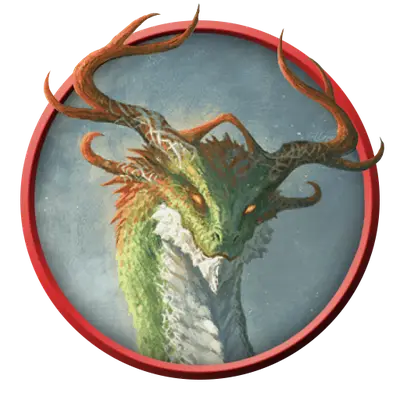

Молодой духовный дракон
Young Spirit Dragon
Большой Дракон, Нейтральный

Класс Защиты 17 Инициатива +4 (14)
Хиты 152 (16к10 + 64)
Скорость 40 футов, Полёта 80 футов, Копания 30 футов
| мод | спас | ||
|---|---|---|---|
| СИЛ | 19 | +4 | +4 |
| ЛОВ | 13 | +1 | +4 |
| ТЕЛ | 19 | +4 | +7 |
| мод | спас | ||
|---|---|---|---|
| ИНТ | 17 | +3 | +3 |
| МДР | 14 | +2 | +2 |
| ХАР | 16 | +3 | +3 |
Сопротивление урону Некротический
Чувства Тёмное зрение 120 футов, пассивное Восприятие 15
Языки Общий, Драконий, Телепатия 120 фт.
Опасность 8 (3 900 опыта; БВ +3)
Действия
Мультиатака. Дракон совершает три атаки Раздиранием. Он может заменить одну атаку использованием Дыхания искажения времени.
Раздирание. Бросок рукопашной атаки: +7, досягаемость 10 фт. Попадание: 14 (3к6 + 4) Рубящего урона плюс 7 (2к6) Некротического урона.
Гибельное дыхание (Перезарядка 5–6). Спасбросок Телосложения: Сл 15, каждое существо в 30-футовом Конусе. Провал: 36 (8к8) Некротического урона. Успех: Только половина урона.
Дыхание искажения времени. Спасбросок Мудрости: Сл 15, каждое ещё не подверженное этому эффекту существо в 30-футовом Конусе. Провал: Цель в свой ход может совершить либо действие, либо Бонусное действие, но не то и другое одновременно, и не может совершать Реакции, а её Скорость ополовинивается. Цель повторяет спасбросок в конце каждого своего хода, оканчивая этот эффект при успехе. Спустя 1 минуту она автоматически преуспевает в спасброске.
Бонус мастерства +3
Среда обитания Любая
Сокровища Любые
Духовные драконы
Драконьи наследники древней империи
Духовные драконы, которых иногда называют драконами песни или песенными драконами, — это могучие создания, чья сила проистекает из магии и истории павших царств. Они воплощают дух ушедшей эпохи и по мере роста обретают переменчивую власть над временем.
Главное стремление духовного дракона — отыскать и изучить руины древнего царства, из которого он явился. Все духовные драконы от природы невероятно любознательны, и многие глубоко ценят культуру и искусство гуманоидных обществ.
Даже самую простую мелодию духовные драконы находят трогательной. Песня, сложенная в ту же эпоху и в тех же краях, откуда родом дракон, способна потрясти его до глубины души, повергнув либо в мрачное уныние, либо в неистовую ярость.
Не бывает двух совершенно одинаковых духовных драконов; каждый несёт в облике черты, присущие именно его империи. Совершите бросок по таблице «Происхождение духовного дракона» для вдохновения или определите сами утраченное царство и родину дракона.
Происхождение духовного дракона
| к6 | Духовный дракон ведёт родословную от… |
| 1 | Эвермита, мифического эльфийского королевства. |
| 2 | Имаскара, южной империи магов-артефакторов. |
| 3 | Джаамдата, доисторической псиократии. |
| 4 | Миф Драннора, легендарного города магии. |
| 5 | Нетерила, империи волшебных знаний. |
| 6 | Остории, первого королевства великанов. |
Молодые духовные драконы любопытны и самоуверенны. Они могут нарушить покой обитателей целого региона, выпустив на волю давно погребённое зло или неосторожно применив едва понятую древнюю магию.